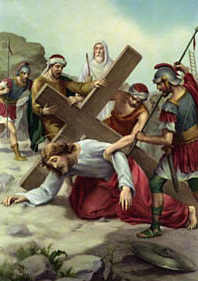

VII. állomás: Jézus másodszor esik el

"Féreg vagyok és nem ember, az emberek gyalázata, népem utálata" (Zsolt 22,7). Ezek a szavak jutnak eszünkbe, amikor Jézust szemléljük, aki másodszor esik el a kereszt alatt. Íme, a föld porában az elítélt! A kereszt súlya nyomta le, ereje egyre inkább elhagyja. Erőlteti azonban és fölkel, hogy folytassa útját. Mit is mond nekünk, bűnösöknek ez a második elesése? Még inkább, mint az első, arra bátorít, hogy álljunk fel. Másodszor is fel kell kelni keresztutunkon. Cyprian Norwid írta: "Nem magunk mögött az Üdvözítő keresztjével, hanem az Üdvözítő után a mi keresztünkkel!" Igazán rövid, de sokatmondó állítás. Arról, hogy a kereszténység milyen értelemben a kereszt vallása. Arra utal, hogy minden ember találkozik idelent Krisztussal, aki a keresztjét hordozza és elesik alatta. Krisztus, a maga részéről a Kálváriára vezető úton találkozik mindannyiunkkal, és keresztje súlya alatt elesve sem szűnik meg hirdetni a jó hírt. Kétezer éve a kereszt evangéliuma szól az emberiséghez. Húsz százada találkozik az eséseiből felkelő Krisztus az eleső emberrel. E kétezer év során sokan megtapasztalták már, hogy az elesés nem jelenti az út végét. Az Üdvözítővel találkozva, tőle hallották a bátorítást: "Elég neked az én kegyelmem, mert az erő a gyöngeségben lesz teljessé" (2Kor 12,9). Megerősítve emelkedtek fel, és megajándékozták a világot a keresztből áradó reménység szavaival. Most, amikor az új évezred küszöbét lépjük át, arra kapunk meghívást, hogy mélyítsük el ennek a találkozásnak a tartalmát. Szükséges, hogy a mostani nemzedék átadja a következő századoknak is a Krisztusban való talpraállás jóhírét.
Úr Jézus Krisztus, aki elestél az ember bűnének súlya alatt és felálltál, mivel magadra vetted és eltörölted azt, add meg nekünk, gyenge embereknek azt az erőt, amellyel mindennapjaink keresztjét tudjuk hordozni, és hogy eséseinkből fölálljunk, s a jövendő nemzedékeknek átadjuk a te üdvözítő erőd evangéliumát. Neked Jézus, gyengeségünkben segítségünk, tisztelet és dicsőség mindörökkön örökké. Amen.